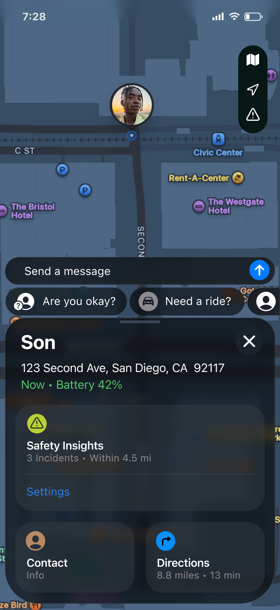
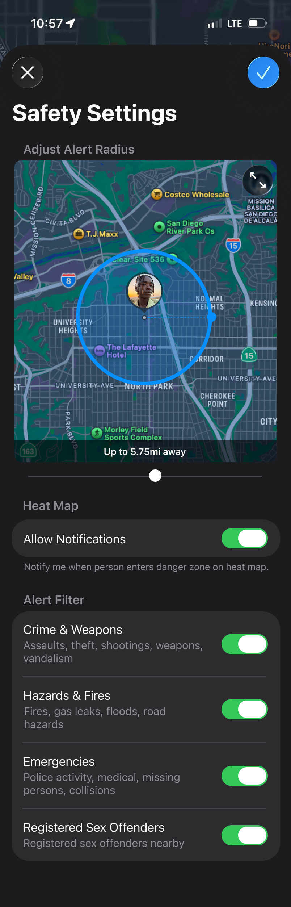
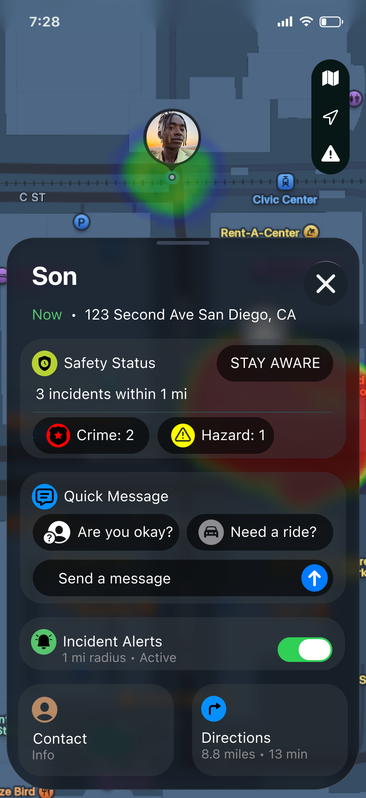
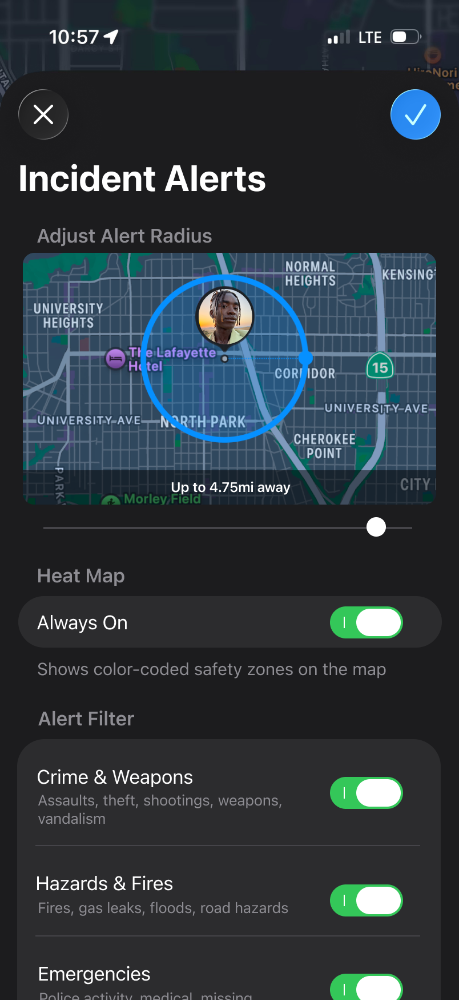
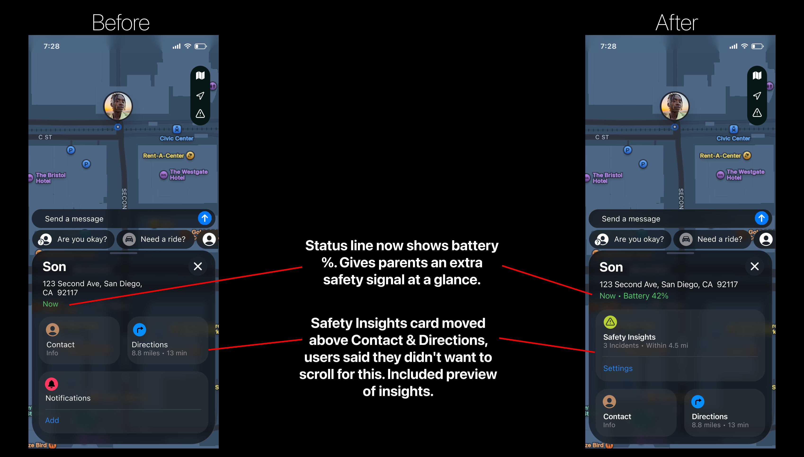
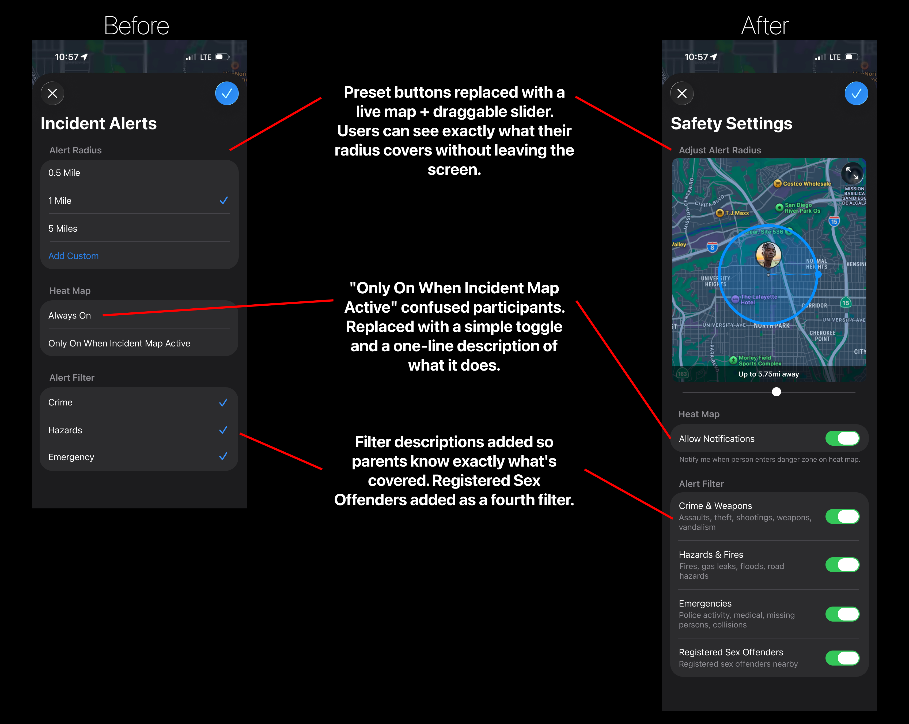

Parents deserve to know
if their kid is safe, not just nearby.
We extended Apple's FindMy with a real-time safety layer that gives parents contextual incident alerts tied to their family member's exact location, turning a passive dot on a map into a meaningful reassurance.
Final Design - at a glance
 Map view - safety heat map
Map view - safety heat map

Person card - safety first
Alert setup - live map preview01 - Overview
Location sharing doesn't answer
the question parents actually ask.
Several of us grew up watching our parents spiral into panic, frantically texting after catching a news alert, not knowing if we were anywhere near whatever chaos had just unfolded. I knew that feeling from the other side: your phone blowing up while you're trying to reassure a parent who only has a blinking dot on a map and zero other information.
That's the gap. FindMy tells you where someone is. It tells you nothing about whether that place is safe. For parents of teens and young adults, that distinction is everything.
Problem Statement
Parents of teens and young adults rely on location apps to stay connected, but location alone doesn't answer their real question: is my child okay right now? When incidents happen nearby, parents have no way to know whether they should panic, call, or do nothing. The gap isn't technical. It's contextual. And it leaves families anxious by default.
Our solution is a native extension to Apple's FindMy: a real-time safety layer that ties incident alerts (crime, hazards, emergencies) directly to a person's current location. A heat map radiating around their pin. Alerts that evolve as situations change. All without leaving an app families already use every day.
We chose FindMy specifically because it's already there, free, pre-installed, and trusted by millions. The global public safety market was valued at $511 billion in 2024. Citizen's 10M+ users prove the demand for exactly the kind of contextual information FindMy currently lacks. We don't need to convince anyone to download another app. We meet families where they already are.
02 - User Research
What we learned: parents don't need
more alerts. They need ambient reassurance.
We interviewed parents and guardians who actively use location tracking apps to monitor their teens or young adults. We deliberately avoided recruiting people already sold on our idea. We wanted to understand actual behavior, not confirm a hypothesis.
Recruiting criteria: parent or guardian of a child aged 13-22, currently using FindMy, Life360, or similar.
Father of a 22 and 27-year-old. Uses FindMy + PulsePoint. Checks situationally, when picking up his son or when something appears in the news.
Mother of two daughters (19 and 21). Checks every 30 minutes. Uses no safety apps, relies entirely on FindMy, texting, and calling.
Mother of a 13-year-old. Monitors every 30 minutes during school or outings. Gathers safety info from news, social media, and word of mouth.
Parent of a 16 and 22-year-old. Uses Life360. Noted that tracking intensity naturally decreases as children grow into adults.
What we found
The overarching theme: location alone creates a false sense of security. Parents could see the dot. They had no idea what was happening around it.
- 3 of 4 parents check location every 30 minutes or more, not because anything was wrong, but because the app gave them no other signal. The anxiety loop was built into the product itself.
- One father maintained two separate apps (FindMy + PulsePoint) just to connect location to safety context. Even then, PulsePoint alerts covered his entire city, not his son's specific block.
- The "5 minutes ago" timestamp was universally disliked. That small delay was enough to plant doubt: "Is that still where they are?"
- Parents wanted alerts that evolved, not a single ping, but ongoing updates as situations changed: "Do I need to go right now? Is it getting worse or better?"
- One parent asked for an emergency button that could simultaneously alert both family and 911, with real-time audio so they could hear what was happening.
"If something is happening in the area, the app doesn't tell me what's going on. I want to know: do I need to go right away? Is my son in danger? I want constant updates."
- Participant 1, father of a 22-year-oldThings we didn't expect going in
- One dad often used FindMy as a navigation tool, guiding his wife through unfamiliar streets by monitoring her pin while on a phone call. The app had evolved into a couples' GPS.
- Trust reduces anxiety. As children age into adulthood, parents described consciously checking less because their child had earned more independence. Any feature we build needs to feel respectful, not surveillance-heavy.
- One parent was texting her child for safety check-ins with zero evidence of danger, just because the neighborhood name was unfamiliar. Uncertainty itself was the trigger, not actual risk.
- One parent's older daughter had opted out of location sharing entirely for privacy reasons, yet the parent still worried constantly. We hadn't anticipated designing for families where tracking isn't even an option.
How research shaped our direction
Going in, we assumed parents mainly wanted alerts for dangerous events. What we learned was subtler: parents want ambient reassurance, not just emergency pings. The product needs to answer "is everything probably fine?" just as much as "is something wrong right now?" That shifted us from a pure alert system toward a calmer, more continuous safety layer, a quieter presence that speaks up when it matters.
We also realized the check-in behavior isn't just a workaround. It's an emotional ritual. Parents aren't checking location because they distrust the app. They're checking because the act of looking provides temporary comfort. The challenge isn't to make people check less. It's to make each check mean more.
03 - Design
One rule guided every decision:
meet parents where they already are.
Our research made it clear: parents don't need a new app. They need a smarter version of the one already on their phone. We focused on a single, native-feeling user flow: setting up safety alerts directly from the FindMy person card. The entry point is already familiar. We just extended it.
Lo-fidelity sketches
 People list & heat map
People list & heat map
 Person card - entry point
Person card - entry point
 Alert setup sheet
Alert setup sheet
 Radius & filter settings
Radius & filter settings
High-fidelity prototypes
People list & heat map
 Person card - top
Person card - top
 Person card - new entry
Person card - new entry
 Alert setup popup
Alert setup popup
 Radius preview on map
Radius preview on map
User flow: setting up safety alerts
- People list & heat map (on). Opening FindMy shows the family list and the map. When the safety layer is active, a color-coded heat map radiates around each person's pin. The heat map button sits in the top-right island alongside the map type and current location buttons, when it's on the hazard icon appears filled in white.
- Person card - first view & heat map (off). Tapping a name slides up a card with the existing rows: Contact, Directions, and Notifications. When the safety layer is off, the map shows no heat overlay. The hazard icon in the top-right island switches to a white outline only, so parents can tell at a glance whether the safety layer is running without opening any settings.
- Person card - scrolled view. Scrolling down reveals a new row: Incident Alerts, sitting naturally between Notifications and Settings. One tap on Enable to proceed to the Incident Alerts page.
- Alert setup popup. Choose a preset radius (0.5 mi, 1 mi, 5 mi) or a custom distance. Toggle the heat map to always show or only when the safety layer is active through the hazard icon on the map. Filter by incident type: Crime, Hazards, Emergency.
- Radius preview on map. A map preview shows the radius ring drawn around the tracked person's current location, giving immediate, concrete feedback on what was just configured.
Alternative designs: pushing the original further
After establishing the core flow, two screens stood out as opportunities to go deeper. The alternatives below address specific friction points surfaced in user research, each grounded in what parents actually said they needed.
Lead with safety, not location
The original person card answered "where is my child?" This redesign answers what parents are actually asking: is my child okay right now?

Screen 2 - full redesignShow the radius, don't just set it
The original offered preset radius buttons and a separate preview screen. That two-step process forced parents to guess what a number meant geographically. This alternative solves both problems in one view.

Screen 4 - full redesignWhat the alternatives taught us
Both screens share the same underlying principle: reduce the steps between a parent's anxiety and their reassurance. Screen 2 surfaces safety context before a parent has to ask for it. Screen 4 makes abstract settings immediately concrete. Together they move the product from a configuration-heavy tool toward something that feels effortlessly informative.
04 - User Testing & Iterations
Every change came directly from
something a real user said.
After building high-fidelity prototypes we ran moderated usability sessions to test them with real users. The goal: find where designs were working and where they weren't, before finalizing.
Parents using FindMy or similar to track a child between 13 and 22 years old.
Moderated think-aloud sessions. Participants walked through the flow narrating their expectations at each step.
Original flow (Screens 1-5) and then alternative designs for Screens 2 and 4 shown side-by-side.
Enable incident alerts, set a 5-mile radius, turn off Hazards & Fires, send a quick message.
What we found in testing
Two main themes came up consistently. First, the original person card didn't surface safety information fast enough. Parents had to scroll through Contact, Directions, and Notifications before getting to anything safety-related. Second, the alert radius setup was hard to visualize. "1 mile" meant nothing without seeing it on a real map, and the bare filter labels didn't clarify which specific incidents were covered.
"I want to know right away - is he okay? I shouldn't have to scroll down to find that out."
- Participant 1, father tracking a college-age son4 of 4 participants preferred toggle switches over checkboxes, and every single person mentioned it without being asked. Checkboxes felt like a task list. Toggles felt like a setting you turn on and leave on, which is exactly the right mental model for a safety feature running passively in the background. On the radius side, 3 of 4 participants preferred the slider over preset buttons, and 3 of 4 said the live map preview while dragging was more helpful than navigating to a separate preview screen. Filter descriptions landed the same way: 3 of 4 said the added subtext helped them understand what each category actually covered.
Point of View
A parent tracking their child needs more than a location pin. They need safety context right away, because knowing where someone is doesn't actually answer the question they're asking: are they okay right now?
Before & After - Screen 2: Person Card
The original card used the same hierarchy FindMy has always had. That works for navigation, not for safety. Based on testing we restructured it so safety information is the first thing a parent sees.

- Safety Insights moves to the top. Users said they shouldn't have to scroll to find out if their child is okay, so we made it the first thing they see when they open the card.
- Battery percentage added inline. A child at 4% who isn't responding reads very differently from one at 80%. One extra data point cuts a specific kind of anxiety.
- Hierarchy reflects how parents actually think. Safety first, then messaging, then navigation, not the other way around.
Before & After - Screen 4: Alert Setup
The original had users pick from preset radius options then navigate to a separate screen to preview them. Filter labels had no descriptions and the heat map options confused 2 of 4 participants. We redesigned it to keep everything in one place.

- Live map preview replaces the separate preview screen. Drag the slider and the radius ring updates in real time, no more guessing what "1 mile" actually covers.
- Heat map reframed as a notification toggle. "Only On When Incident Map Active" confused half the testers. To fix this we replaced it with a simple toggle and a one-line description that describes sending notifications when the person enters danger zones.
- Filter descriptions + a new RSO category. Bare labels like "Crime" left parents guessing. Adding subtext clarified each category, and 2 of 4 participants brought up Registered Sex Offenders as a desired filter entirely on their own, without any prompting from us.
05 - Reflection
What I learned stepping into
the role of UX Researcher and Designer.
This was my first time doing real UX research with real users, not just reading about it. A few things stuck with me.
- Recruiting and interviewing users is harder than it looks. Getting people to agree to be interviewed, show up, and actually open up takes a lot more effort than the design work itself. The conversations that gave us our best insights only happened because we asked follow-up questions that weren't on the script. That's something you can only learn by doing it.
- Research changes what you think you know. We went in assuming parents wanted emergency alerts. What they actually wanted was ambient reassurance, something quieter that just tells them everything is probably fine. That one shift shaped every design decision we made after our first interviews round.
- Designing within an existing system is its own skill. Every new element had to feel like Apple made it. That constraint pushed us toward better decisions, but it also meant cutting ideas we liked because they didn't belong in FindMy's design language.
With more time and resources
We'd build out more screens beyond the core flow. Right now the prototype covers setup and the person card. We never got to design what clicking on an active incident alert actually looks like, or how a parent manages multiple incidents at once. Getting those right is what would make the feature feel complete, and it's the part of the product that matters most when something is actually wrong.